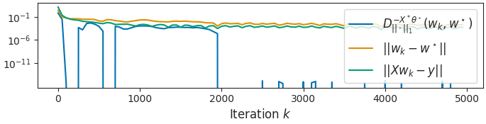

Note
Click here to download the full example code
Nullity of Bregman guarantees¶
This example shows that the Bregman divergence is not enough to control convergence of the iterates: it vanishes as soon as the signs are the same.
Out:
usetex mode requires TeX.
Res norm PD 1.64e-10
Res norm BP 1.63e-12
import numpy as np
import matplotlib.pyplot as plt
from numpy.linalg import norm
from sklearn.linear_model import LassoLars
from iterreg.sparse import primal_dual
from iterreg.utils import make_sparse_data
from celer.plot_utils import configure_plt
configure_plt()
n, d = 30, 70
snr = 10
rho = 0.2
X, y, x_true = make_sparse_data(n, d, rho=rho, snr=snr)
clf = LassoLars(alpha=1e-20, fit_intercept=False)
clf.fit(X, y)
w_bp = clf.coef_
f_store = 50
max_iter = 200000
algo = "Primal-Dual"
w_pd, theta_pd, all_w_pd = primal_dual(
X, y, max_iter=max_iter, f_store=f_store, verbose=False)
subgrad = - X.T @ theta_pd
assert w_bp[np.abs(subgrad) > 1 - 1e-10].all()
assert not w_bp[np.abs(subgrad) < 1 - 1e-10].any()
subgrad2 = np.sign(w_bp)
bregman = (norm(all_w_pd, ord=1, axis=1) - norm(w_pd, ord=1) -
(subgrad2[None, :] * (all_w_pd - w_pd)).sum(axis=1))
feasability = norm(X @ all_w_pd.T - y[:, None], axis=0)
print("Res norm PD %.2e" % norm(X @ w_pd - y))
print("Res norm BP %.2e" % norm(X @ w_bp - y))
plt.close('all')
figsize = (6.85, 1.75)
fig, ax = plt.subplots(1, 1, constrained_layout=True, figsize=figsize)
plot_bregman = True
n_points = 100
plt.semilogy(f_store * np.arange(n_points),
bregman[:n_points],
label=r'$D_{||\cdot||_1}^{- {X}^* \theta^\star}(w_k, w^\star)$')
plt.semilogy(f_store * np.arange(n_points),
norm(all_w_pd - w_bp, axis=1)[:n_points],
label=r'$||w_k - w^\star||$')
plt.semilogy(f_store * np.arange(n_points),
feasability[:n_points],
label=r'$||{X} w_k - {y}||$')
plt.xlabel("Iteration $k$")
plt.legend(loc='upper right')
ax.set_yticks([1e-1, 1e-6, 1e-11])
plt.show(block=False)
Total running time of the script: ( 0 minutes 6.182 seconds)